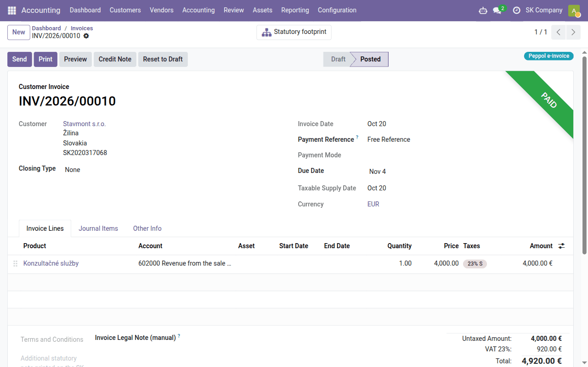
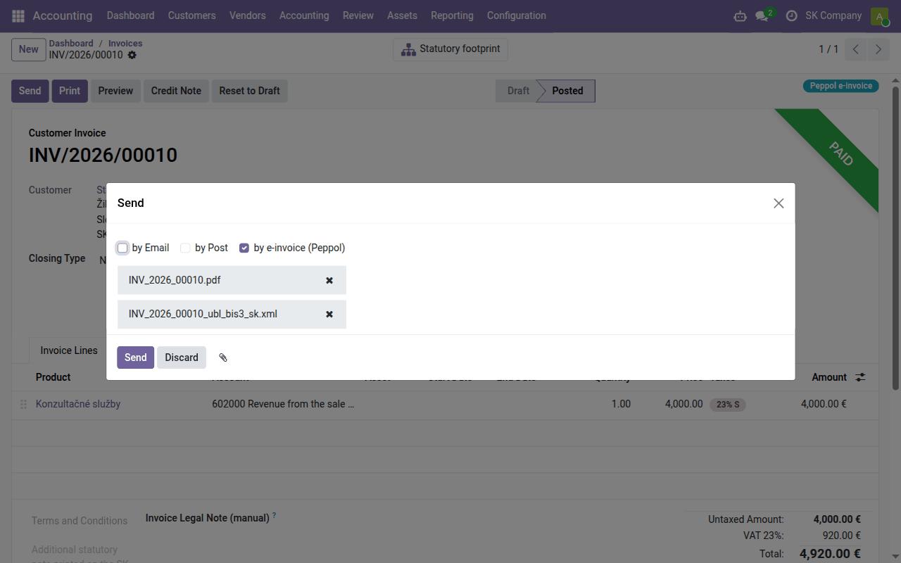

Task guide
E-invoices via Peppol
Sending and receiving e-invoices over the Peppol network through the ePošťák access point — the connection, Peppol addresses, which invoices go electronically, delivery states and received invoices as drafts.
| Country | Slovakia |
|---|---|
| Edition | Odoo Community |
| Covers | edi_base, edi_base_peppol, edi_epostak_base, edi_epostak_connector_sapi, edi_epostak_peppol, edi_epostak_broker_client (delivered separately), l10n_sk_ubl_bis3 |
What this guide is for
Peppol is the European network for exchanging e-invoices. An invoice on it is not a PDF but an XML file (Peppol BIS Billing 3.0) that the customer's system reads without retyping. You join the network through an access point — in Odoo through the Slovak ePošťák — and are found on it by your Peppol address.
From 1 January 2027 an e-invoice is mandatory in Slovakia for supplies to
a domestic taxable person (and to a non-taxable legal person established in
Slovakia), except exempt supplies and simplified invoices, and everyone
receiving such invoices must be able to receive them
(§ 85o of the VAT Act). Until the end of 2026
an e-invoice may be sent only with the customer's consent. Details are in
edi_base_peppol.
This guide covers the connection, the setup, sending, the states and receiving.
Connecting to ePošťák
Install the EDI, Peppol and ePošťák modules from Apps (ePošťák EDI: Peppol BIS 3.0 and ePošťák EDI Connector: SAPI-SK 1.0). Then set up the connection in Settings → EDI, section ePošťák, in one of two ways:
| Way | What you fill in |
|---|---|
| Your own contract with ePošťák | Environment Production and below it the Client ID and Client Secret from your ePošťák account |
| Through the Data Dance service — switched on by our team | the Data Dance broker block: Broker URL, Broker key ID and Broker key we give you; your Odoo holds no ePošťák credentials |
Then click Test Connection. While the Sandbox environment is selected a yellow bar says so — sandbox invoices never reach the real Peppol network, so you can try things safely there.
The Electronic Invoicing → Enable PEPPOL setting in Settings → Accounting belongs to a different, paid Odoo service; invoices through ePošťák do not need it.
Setup
- Permission. Settings → EDI, block Peppol BIS3 (this company): tick Allow e-invoicing via Peppol and choose the Peppol scope:
- Slovak mandate: domestic B2B and B2G only — the invoices the mandate covers go electronically, the rest as PDF;
- Any customer with a Peppol address — electronically to everyone who has one.
Auto-send Peppol on Invoice Post sends an invoice as soon as it is posted; without it you send it with Send. Peppol Purchase Journal is the journal for received invoices.

- Your company's Peppol address. On the company's contact, Invoicing
tab: Peppol e-address (EAS)
0245and the Peppol endpoint = your DIČ (ten digits). Not the IČ DPH and not the IČO. - Your customers' Peppol addresses in the same place on their contacts,
likewise
0245and their DIČ. Before the first invoice, check that the customer is reachable on the network — see the Peppol address check. - If a customer should receive invoices otherwise than the scope decides, set Invoice sending on their contact (by e-invoice (Peppol), by email …).
Which invoices go electronically
Every posted customer invoice and credit note shows a badge in its header saying how it will go, and the fields Sent as and Why on its Other Info tab:
| Badge | Meaning |
|---|---|
| Peppol e-invoice | goes via Peppol |
| goes the usual way (email, post) | |
| Peppol, but blocked | should go via Peppol but cannot: your company or the customer has no Peppol address — add it |
Under the Slovak mandate, an invoice to a consumer (a customer with no IČO, DIČ or IČ DPH), to a foreign customer, or one whose lines are all exempt goes as PDF. A sole trader with an IČO is a business, and their invoice goes electronically.

Sending
With auto-send the invoice goes by itself when posted. Otherwise click
Send on the invoice: the by e-invoice (Peppol) method is ticked and
the XML file (…_ubl_bis3_sk.xml) is attached. You may email the customer
the PDF as well.

Before sending, Odoo checks the file against the EN 16931 and Peppol rules; an invoice with errors does not go and the errors are listed. The invoice stays posted — correct the data and send it again. A delivered invoice is not sent again: it is corrected by a credit note.
States
The invoice's Peppol Status shows what is happening to the file:
| Peppol Status | Meaning |
|---|---|
| Ready / Queued | waiting to be sent (the queue runs every 2 minutes; after a temporary ePošťák outage it retries by itself) |
| Sent | ePošťák accepted the invoice — not yet delivery |
| Done | the invoice is delivered to the customer's access point |
| Error | ePošťák rejected or could not deliver the invoice; the reason is in the message |
Delivery is checked every 30 minutes. Delivery is not the customer's agreement: if their system sends responses, the invoice also shows the Peppol Invoice Response (for example Accepted or Rejected with a reason).
Receiving
Invoices your suppliers send to your Peppol address are collected every 30 minutes, and each becomes a draft vendor bill in the Peppol Purchase Journal — supplier, lines, taxes and amounts filled in from the file, the XML attached. The draft is never posted by itself: check the expense accounts and taxes as for any vendor bill (Daily bookkeeping) and post it.
If invoices stop arriving, Settings → EDI → ePošťák shows the Last inbound poll; Poll inbound now collects immediately. After three failures in a row the EDI manager gets an activity.
Who may do what
Anyone who may edit an invoice can send it via Peppol — on posting and with Send. The Send via Peppol and Peppol Response… buttons and the Peppol EDI Messages tab with the full message history are visible to users with the EDI User group (set in Settings → Users). All messages are also in the EDI → Messages app.